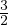

.
.
Funktsioone kujul y = xa,a ∈ R nimetatakse astmefunktsioonideks. Tüüpilised astmefunktsioonid on
.
Lisaks on reaalarvuliste astendajatega arvutamisel vaja teada järgmiseid põhireegleid:
a0 = 1, kui a≠0,
a1 = a,
an = a ⋅ a ⋅… ⋅ a (n tükki), kui n ∈ N,
a-n = , kui a≠0 ja n ∈ Z või a > 0 ja n ∈ Q,
Kui astendajateks on ratsionaalarvud st. arvud, mida saab väljendada kujul , nii et m ∈ Z ja n ∈ Z+, siis kehtivad ka järgmised arvutusvalemid:
au ⋅ av = au+v,
(au)v = auv,
au : av = au-v,
(ab)u = aubu,
()u = .
Astmefunktsiooni sisaldavate võrrandite lahendamisel on meil kasu
järgmistest järeldustest:
kui au = av, siis u = v või a = 1. Kui au = bu, siis a = b või u = 0 ning lisaks
a = -b, kui u on paarisarv.
Liitprotsendiline kasvamine tähendab mingi algse suuruse muutumist mingi protsendi võrra igas konkreetses ajaühikus ning seda väljendatakse valemiga
kus c on algne suurus, p on kasvamise protsent ning n on ajavahemike arv. Liitprotsendiline kahanemine on analoogiliselt
kus liitmistehte asemel lihtsalt lahutame. Näiteks, kui võtame mõnelt kahtlaselt sõbralt laenu 100 EUR intressiga 10% päevas ja võtame laenu kaheks nädalaks, siis peame lõpuks tagasi maksma c = 100,p = 10,n = 14
eurot.
Funktsiooni kujul y =  nimetatakse ruutjuureks. Ruutjuure määramis- ning
muutumispiirkonnaks on vahemik [0;∞]. Ruutjuur on kogu määramispiirkonnas
pidev ning kasvab rangelt.
nimetatakse ruutjuureks. Ruutjuure määramis- ning
muutumispiirkonnaks on vahemik [0;∞]. Ruutjuur on kogu määramispiirkonnas
pidev ning kasvab rangelt.
Funktsiooni kujul y = nimetatakse kuupjuureks. Kuupjuure määramis- ning
muutumispiirkonnaks on vahemik [-∞;∞]. Funktsioon on kogu piirkonnas rangelt
kasvav ning pidev. Funktsioon on paaritu ning tema graafik on sümmeetriline
nullpunkti suhtes.
Funktsioon kujul y = on määratud vahemikus [0;∞] ning samuti tema
muutumispiirkond on [0;∞]. Funktsiooni graafik on kogu ulatuses kumer.
Funktsioon kujul y = on määratud vahemikus [-∞;∞] ning samuti tema
muutumispiirkond on [-∞;∞]. Funktsiooni on kogu määramispiirkonnas pidev ja
rangelt kasvav. Funktsiooni graafik on nõgus, kui x < 0 ning kumer kui
x > 0.
Funktsiooni kujul y = cax, kus a > 0,a≠1 ja x ∈ R, nimetatakse
eksponentfunktsiooniks. Eksponentfunktsioonide määramispiirkonnaks on hulk
R = [-∞;∞].
Omadused:
Arvu n logaritmiks alusel a nimetatakse arvu m, millega alust a astendades on tulemuseks arv n. Sümbolites:
Arvu logaritmi omadusi:

Logaritmfunktsiooniks nimetatakse funktsiooni kujul y = log ax, kus a > 0 ja a≠1.
Sellisel kujul funktsioon on pöördfunktsiooniks eksponentfunktsioonile kujul y = ax.
Logaritmfunktsiooni määramispiirkonnaks on kogu positiivsete reaalarvude
hulk {x ∈ R,kusx > 0}. Muutumispiirkonnaks on kogu reaalarvude hulk
R.
Logaritmfunktsiooni omadused:
Funktsioonid esitatavad kujul
iga x korral, kus p ehk periood on vähim positiivne arv, mille korra võrdus kehtib,
nimetatakse perioodilisteks funktsioonideks.
Perioodilised on trigonomeetrilised on näiteks funktsioonid sin, cos ja tan vastavalt
perioodidega 2π, 2π ja π. Funktsiooni perioodilisuse näitamiseks on vaja näidata, et
leidub periood p.
Funktsiooni y = sinx nimetatakse siinusfunktsiooniks. Funktsiooni
määramispiirkonnaks on reaalarvude hulk R ning muutumispiirkonnaks on
vahemik [-1;1]. Siinusfunktsioon on paaritu ning tema graafik on sümmeetriline
koordinaatide alguspunkti suhtes. Siinusfunktsioon on perioodiline perioodiga 2π.
Nullkohtadeks on argumendid …,-2π; - π;0;π;2π,… ehk {nπ|n ∈ Z}.
Positiivsuspiirkondadeks on vahemikud

Negatiivsuspiirkondadeks on vahemikud
Funktsiooni kasvamisvahemikud on
Funktsiooni kahanemisvahemikud on

Funktsiooni y = cosx nimetatakse koosinusfunktsiooniks.
Funktsiooni määramispiirkonnaks on reaalarvude hulk R ning muutumispiirkonnaks
on vahemik [-1;1]. Koosinusfunktsioon on paaris ning tema graafik on sümmeetriline
y-telje suhtes. Funktsioon on perioodiline perioodiga 2π. Tema seos siinusfunktsiooniga
on

mille abil saame ka tuletada tema nullkohad, positiivsus-, negatiivus-, kasvamis- ja
kahanemisvahemikud. Ehk siis nullkohtadeks on argumendid …,-π; - ;0;
;0; ;,…
ehk {nπ + |n ∈ Z}.
;,…
ehk {nπ + |n ∈ Z}.
Positiivsuspiirkondadeks on vahemikud
Negatiivsuspiirkondadeks on vahemikud
Funktsiooni kasvamisvahemikud on

Funktsiooni kahanemisvahemikud on


Funktsiooni y = tanx, kus x≠(2n + 1),n ∈ Z nimetatakse tangensfunktsiooniks.
Tangensfunktsiooni määramispiirkonnaks on hulk R\(2n + 1) ,n ∈ Z.
Muutumispiirkonnaks on terve reaalarvude hulk R. Tangensfunktsioon on paaritu
funktsioon ning tema graafik on sümmeetriline koodinaatide alguspunkti suhtes.
Tangensfunktsiooni perioodiks on π.
,n ∈ Z.
Muutumispiirkonnaks on terve reaalarvude hulk R. Tangensfunktsioon on paaritu
funktsioon ning tema graafik on sümmeetriline koodinaatide alguspunkti suhtes.
Tangensfunktsiooni perioodiks on π.
Funktsiooni y = arcsinx nimetatakse arkussiinuseks. See on tinglikult funktsiooni sinx pöördfunktsioon, kui arvestame, et
Arkussiinuse määramispiikond on vahemik [-1;1] ning muutumispiirkonnaks on
ning tegemist on paaritu funktsiooniga, mille ainus nullkoht on x0 = 0.
Positiivsuspiirkond on 0 < x ≤ 1, negatiivsuspiirkond on -1 ≤ x < 0. Kasvamispiirkond
on 0 < x ≤ 1. Kahanemispiirkonda pole.
Funktsioon y = arccosx nimetatakse arkuskoosiinuseks, ning analoogselt on
funktsiooni cosx pöördfunktsioon, tingimusel, et
Seega arkuskosiinuse määramispiikond on vahemik [-1;1] ning muutumispiirkonnaks
on 0 ≤ x ≤ π.
Funktsiooni y = arctanx nimetatakse arkustangensiks, ning see on tangensfunktsiooni
pöördfunktsioon, tingimusel et
Funktsiooni määramispiirkonnaks on reaalarvude hulk R ning muutumispiirkonnaks
vahemi [- ;
; ]. Arkustangentsi funktsioon on paaritu.
]. Arkustangentsi funktsioon on paaritu.